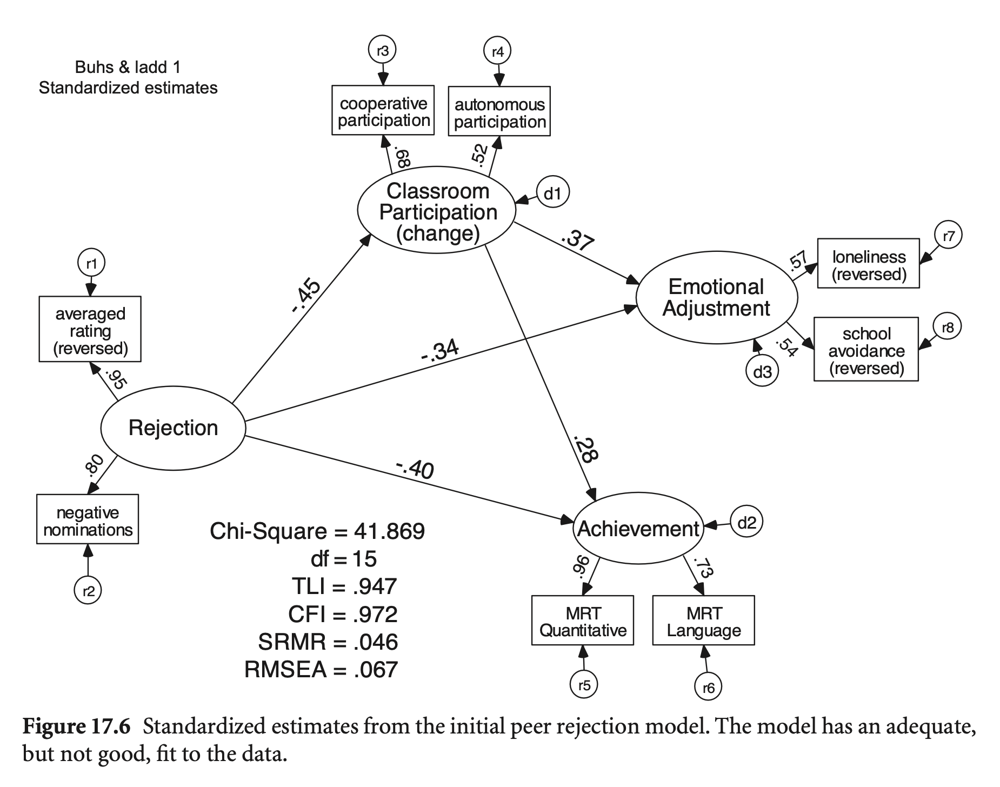
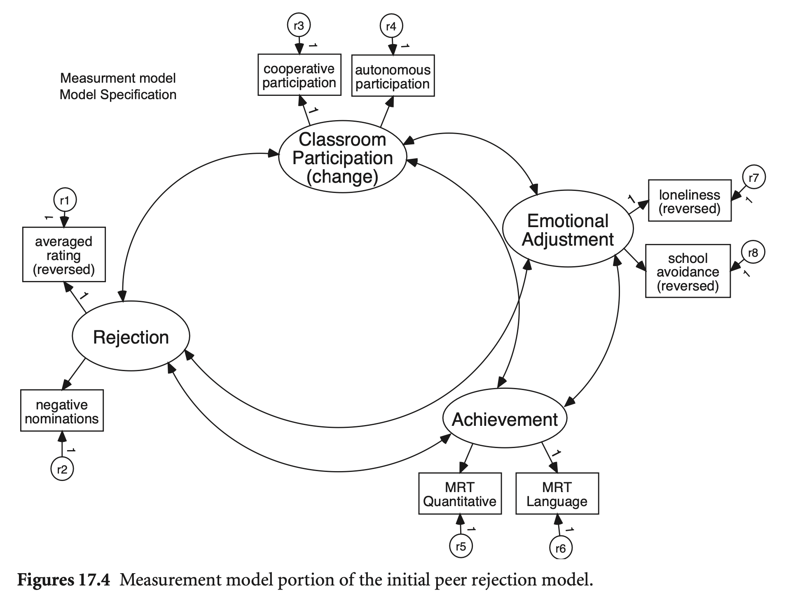
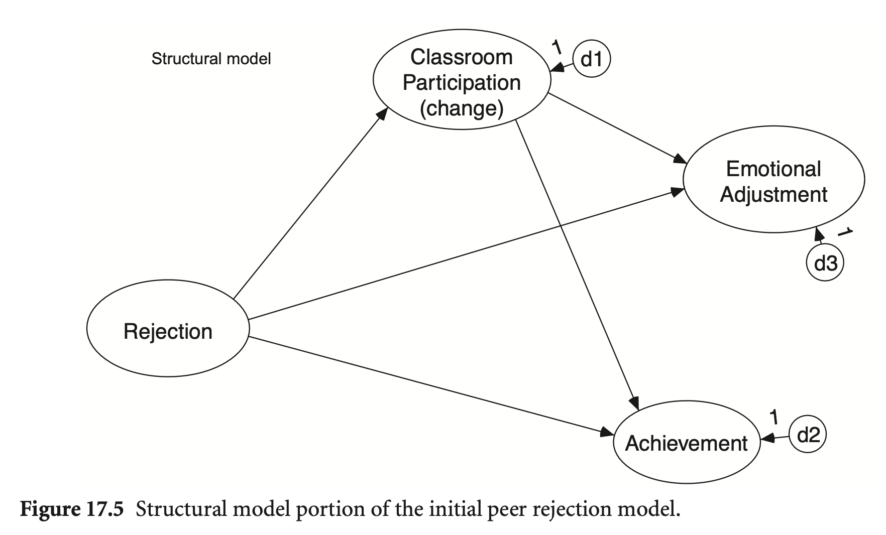
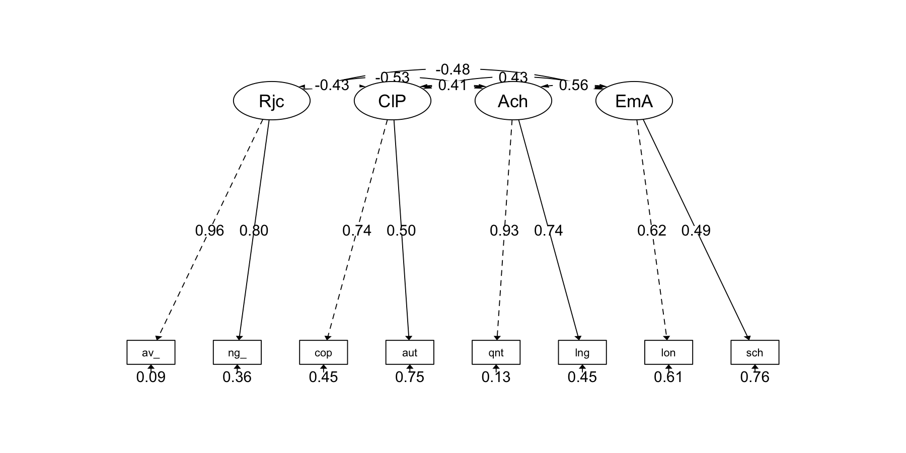
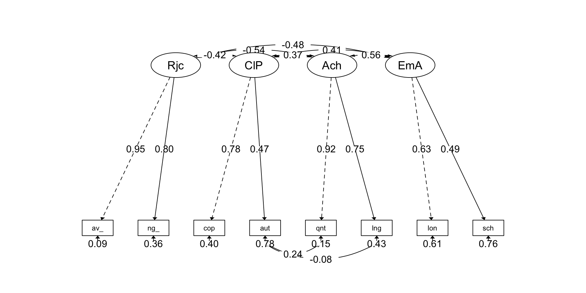
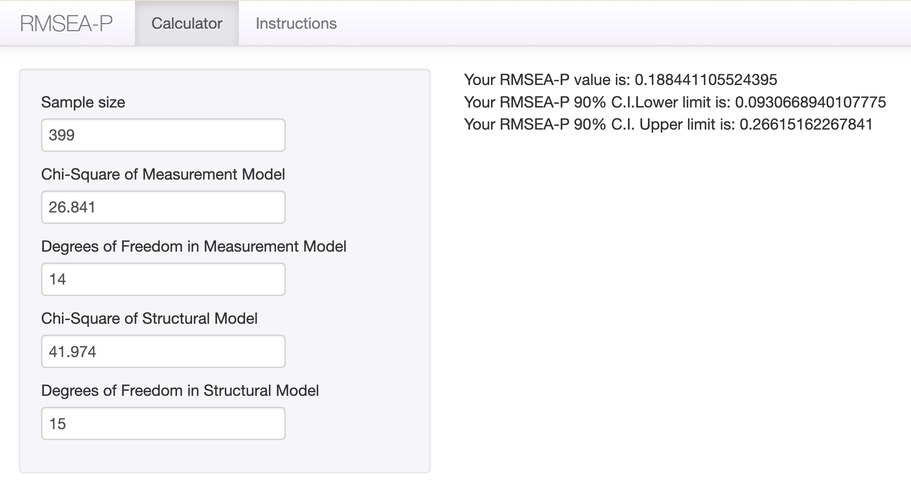
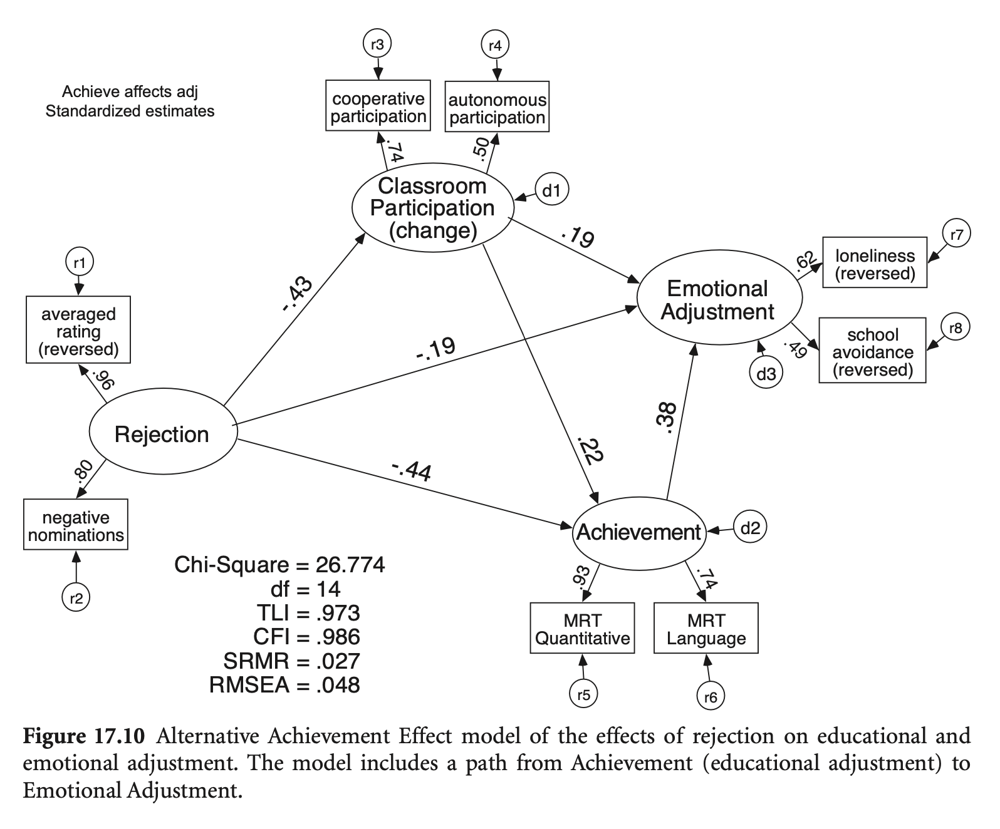
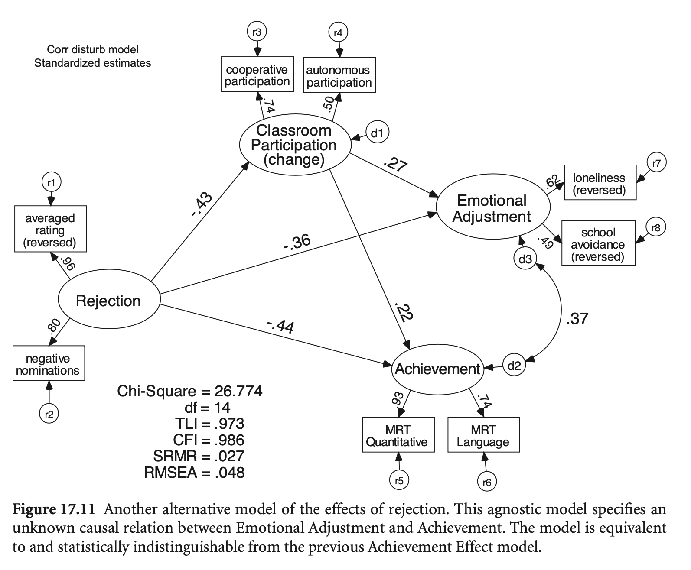

Load libraries
library(haven)
library(psych)
library(tidyverse)
library(lavaan)
library(semTools)
library(manymome)Multiple Regression and Beyond (3e) by Timothy Z. Keith
library(haven)
library(psych)
library(tidyverse)
library(lavaan)
library(semTools)
library(manymome)A latent variable path model 또는 structural regression (SR) model
먼저 측정 모형에 대한 적합도/적절성를 평가해 모형의 misfit을 파악한 후, 구조 모형에 대한 적합도/적절성를 평가하는 2-step 방식이 권장됨.
적합도 지표는 보통 측정 모형의 적합도가 훨씬 큰 비중을 차지하게 됨; Anderson and Gerbing (1988)
즉, 잠재변수 간의 관계에 대한 평가에는 부적절하기 쉬워짐
a little-recognized drawback of these goodness-of-fit indices is that they are usually heavily influenced by the goodness of fit of the measurement model portion of the overall (composite) model and only reflect, to a much lesser degree, the goodness of fit of the causal (path) model portion of the overall model. (p. 440, Mulaik et al. (1989))
In 63% of the studies the RMSEA-P was greater than the .08 standard that is typically used and supported by Williams and O’Boyle (2010), and in nearly half (47%) of these 43 studies the value for the RMSEA-P failed to meet the least stringent criterion of .10 associated with mediocre fit. Moreover, many of the RMSEA-P values greatly exceeded .10, in that eight were above .15, and two were greater than .20. As for the RMSEA-P CI results, in 34 cases (79%) the studies failed to meet one or both of Chen et al.’s (2008) criteria. (O’Boyle, & Williams, 2013)
Buhs, E. S., & Ladd, G. W. (2001). Peer rejection as antecedent of young children’s school adjustment: An examination of mediating processes. Developmental psychology, 37(4), 550. Buhs & Ladd, 2001; 링크

Measurement part; 서로 상관 | Structural part; 거의 포화


rejection <- haven::read_sav("data/chap 17 intro latent var SEM/buhs & ladd data.sav")rejection |> print()# A tibble: 399 × 8
ave_rats neg_nom coop auto quant lang lone schavoid
<dbl> <dbl> <dbl> <dbl> <dbl> <dbl> <dbl> <dbl>
1 -1.33 -1.09 1.19 0.691 7.47 6.30 2.09 2.48
2 1.32 0.551 -0.128 -0.0710 2.72 2.76 1.42 2.16
3 -0.639 -1.09 -0.293 -1.26 6.40 5.39 1.59 1.38
4 1.42 -0.365 -0.190 -0.563 0.989 1.05 0.940 2.13
5 0.584 -0.0127 -0.360 -0.126 2.80 3.56 0.357 2.20
6 -1.20 -1.51 0.0370 0.0676 7.07 7.79 1.37 2.03
7 0.420 0.390 -0.252 0.398 3.68 3.47 2.08 3.00
8 -0.404 -0.806 0.775 1.03 7.03 4.94 2.03 2.61
9 1.99 1.89 -0.454 -0.664 1.51 5.08 0.660 0.992
10 -0.383 -1.76 0.638 0.0292 6.68 4.95 2.27 2.34
# ℹ 389 more rowspsych::lowerCor(rejection) av_rt ng_nm coop auto quant lang lone schvd
ave_rats 1.00
neg_nom 0.76 1.00
coop -0.31 -0.30 1.00
auto -0.18 -0.17 0.37 1.00
quant -0.48 -0.38 0.27 0.25 1.00
lang -0.38 -0.31 0.20 0.08 0.69 1.00
lone -0.27 -0.19 0.18 0.10 0.34 0.30 1.00
schavoid -0.25 -0.25 0.19 0.15 0.22 0.20 0.31 1.00mod_reject <- '
# Measurement model
Reject =~ ave_rats + neg_nom
ClassPart =~ coop + auto
Achieve =~ quant + lang
EmotAdj =~ lone + schavoid
# Structural model
EmotAdj ~ ClassPart + Reject
Achieve ~ ClassPart + Reject
ClassPart ~ Reject
# Residual covariances
EmotAdj ~~ 0*Achieve
'
fit_reject <- sem(mod_reject, data = rejection)
summary(fit_reject, standardized = TRUE, fit.measures = TRUE, rsquare = TRUE) |> print()lavaan 0.6-19 ended normally after 51 iterations
Estimator ML
Optimization method NLMINB
Number of model parameters 21
Number of observations 399
Model Test User Model:
Test statistic 41.974
Degrees of freedom 15
P-value (Chi-square) 0.000
Model Test Baseline Model:
Test statistic 974.475
Degrees of freedom 28
P-value 0.000
User Model versus Baseline Model:
Comparative Fit Index (CFI) 0.972
Tucker-Lewis Index (TLI) 0.947
Loglikelihood and Information Criteria:
Loglikelihood user model (H0) -3713.422
Loglikelihood unrestricted model (H1) -3692.435
Akaike (AIC) 7468.844
Bayesian (BIC) 7552.613
Sample-size adjusted Bayesian (SABIC) 7485.978
Root Mean Square Error of Approximation:
RMSEA 0.067
90 Percent confidence interval - lower 0.044
90 Percent confidence interval - upper 0.092
P-value H_0: RMSEA <= 0.050 0.109
P-value H_0: RMSEA >= 0.080 0.207
Standardized Root Mean Square Residual:
SRMR 0.046
Parameter Estimates:
Standard errors Standard
Information Expected
Information saturated (h1) model Structured
Latent Variables:
Estimate Std.Err z-value P(>|z|) Std.lv Std.all
Reject =~
ave_rats 1.000 0.901 0.949
neg_nom 0.802 0.057 14.175 0.000 0.722 0.803
ClassPart =~
coop 1.000 0.409 0.682
auto 0.788 0.141 5.603 0.000 0.322 0.520
Achieve =~
quant 1.000 1.892 0.957
lang 0.683 0.063 10.915 0.000 1.291 0.726
EmotAdj =~
lone 1.000 0.317 0.567
schavoid 1.140 0.223 5.110 0.000 0.361 0.540
Regressions:
Estimate Std.Err z-value P(>|z|) Std.lv Std.all
EmotAdj ~
ClassPart 0.289 0.098 2.947 0.003 0.372 0.372
Reject -0.118 0.034 -3.434 0.001 -0.335 -0.335
Achieve ~
ClassPart 1.298 0.386 3.363 0.001 0.281 0.281
Reject -0.847 0.136 -6.220 0.000 -0.403 -0.403
ClassPart ~
Reject -0.205 0.034 -6.063 0.000 -0.451 -0.451
Covariances:
Estimate Std.Err z-value P(>|z|) Std.lv Std.all
.Achieve ~~
.EmotAdj 0.000 0.000 0.000
Variances:
Estimate Std.Err z-value P(>|z|) Std.lv Std.all
.ave_rats 0.089 0.048 1.852 0.064 0.089 0.099
.neg_nom 0.287 0.037 7.777 0.000 0.287 0.355
.coop 0.192 0.032 6.056 0.000 0.192 0.535
.auto 0.280 0.027 10.447 0.000 0.280 0.730
.quant 0.333 0.281 1.184 0.237 0.333 0.085
.lang 1.494 0.168 8.894 0.000 1.494 0.473
.lone 0.212 0.025 8.477 0.000 0.212 0.679
.schavoid 0.317 0.034 9.222 0.000 0.317 0.708
Reject 0.811 0.079 10.212 0.000 1.000 1.000
.ClassPart 0.133 0.032 4.165 0.000 0.797 0.797
.Achieve 2.350 0.335 7.009 0.000 0.657 0.657
.EmotAdj 0.064 0.020 3.183 0.001 0.637 0.637
R-Square:
Estimate
ave_rats 0.901
neg_nom 0.645
coop 0.465
auto 0.270
quant 0.915
lang 0.527
lone 0.321
schavoid 0.292
ClassPart 0.203
Achieve 0.343
EmotAdj 0.363
modindices(fit_reject, sort = T) |> subset(mi > 3) |> print() lhs op rhs mi epc sepc.lv sepc.all sepc.nox
43 Achieve =~ lone 17.657 0.080 0.152 0.271 0.271
51 ave_rats ~~ neg_nom 13.461 1.120 1.120 7.003 7.003
85 Achieve ~ EmotAdj 13.461 2.180 0.365 0.365 0.365
64 coop ~~ auto 13.461 0.293 0.293 1.266 1.266
84 EmotAdj ~ Achieve 13.461 0.059 0.354 0.354 0.354
14 Achieve ~~ EmotAdj 13.461 0.139 0.360 0.360 0.360
70 auto ~~ lang 10.688 -0.121 -0.121 -0.187 -0.187
69 auto ~~ quant 8.863 0.125 0.125 0.408 0.408
41 Achieve =~ coop 6.368 -0.094 -0.178 -0.297 -0.297
74 quant ~~ lone 4.734 0.075 0.075 0.284 0.284
62 neg_nom ~~ lone 4.150 0.032 0.032 0.129 0.129
65 coop ~~ quant 3.948 -0.087 -0.087 -0.345 -0.345
48 EmotAdj =~ auto 3.564 -0.487 -0.154 -0.249 -0.249measurement <- '
# Measurement model
Reject =~ ave_rats + neg_nom
ClassPart =~ coop + auto
Achieve =~ quant + lang
EmotAdj =~ lone + schavoid
'
fit_cfa <- cfa(measurement, data = rejection)
summary(fit_cfa, standardized = TRUE, fit.measures = TRUE, rsquare = TRUE) |> print()lavaan 0.6-19 ended normally after 49 iterations
Estimator ML
Optimization method NLMINB
Number of model parameters 22
Number of observations 399
Model Test User Model:
Test statistic 26.841
Degrees of freedom 14
P-value (Chi-square) 0.020
Model Test Baseline Model:
Test statistic 974.475
Degrees of freedom 28
P-value 0.000
User Model versus Baseline Model:
Comparative Fit Index (CFI) 0.986
Tucker-Lewis Index (TLI) 0.973
Loglikelihood and Information Criteria:
Loglikelihood user model (H0) -3705.856
Loglikelihood unrestricted model (H1) -3692.435
Akaike (AIC) 7455.712
Bayesian (BIC) 7543.469
Sample-size adjusted Bayesian (SABIC) 7473.662
Root Mean Square Error of Approximation:
RMSEA 0.048
90 Percent confidence interval - lower 0.019
90 Percent confidence interval - upper 0.075
P-value H_0: RMSEA <= 0.050 0.510
P-value H_0: RMSEA >= 0.080 0.024
Standardized Root Mean Square Residual:
SRMR 0.027
Parameter Estimates:
Standard errors Standard
Information Expected
Information saturated (h1) model Structured
Latent Variables:
Estimate Std.Err z-value P(>|z|) Std.lv Std.all
Reject =~
ave_rats 1.000 0.907 0.956
neg_nom 0.792 0.058 13.659 0.000 0.718 0.799
ClassPart =~
coop 1.000 0.443 0.739
auto 0.703 0.142 4.938 0.000 0.311 0.503
Achieve =~
quant 1.000 1.845 0.933
lang 0.718 0.060 11.880 0.000 1.324 0.745
EmotAdj =~
lone 1.000 0.349 0.625
schavoid 0.938 0.173 5.429 0.000 0.328 0.490
Covariances:
Estimate Std.Err z-value P(>|z|) Std.lv Std.all
Reject ~~
ClassPart -0.173 0.029 -5.920 0.000 -0.432 -0.432
Achieve -0.894 0.104 -8.618 0.000 -0.535 -0.535
EmotAdj -0.151 0.026 -5.712 0.000 -0.477 -0.477
ClassPart ~~
Achieve 0.333 0.060 5.533 0.000 0.408 0.408
EmotAdj 0.066 0.015 4.265 0.000 0.425 0.425
Achieve ~~
EmotAdj 0.359 0.057 6.331 0.000 0.558 0.558
Variances:
Estimate Std.Err z-value P(>|z|) Std.lv Std.all
.ave_rats 0.078 0.051 1.517 0.129 0.078 0.086
.neg_nom 0.293 0.038 7.691 0.000 0.293 0.362
.coop 0.163 0.040 4.104 0.000 0.163 0.454
.auto 0.287 0.028 10.360 0.000 0.287 0.747
.quant 0.508 0.243 2.089 0.037 0.508 0.130
.lang 1.408 0.159 8.851 0.000 1.408 0.445
.lone 0.191 0.026 7.230 0.000 0.191 0.610
.schavoid 0.340 0.031 10.876 0.000 0.340 0.760
Reject 0.823 0.081 10.105 0.000 1.000 1.000
ClassPart 0.196 0.044 4.426 0.000 1.000 1.000
Achieve 3.402 0.365 9.322 0.000 1.000 1.000
EmotAdj 0.122 0.029 4.258 0.000 1.000 1.000
R-Square:
Estimate
ave_rats 0.914
neg_nom 0.638
coop 0.546
auto 0.253
quant 0.870
lang 0.555
lone 0.390
schavoid 0.240
semPaths2 <- function(model, what = 'std', layout = "tree", rotation = 1) {
semPlot::semPaths(model, what = what, edge.label.cex = 1, edge.color = "black", layout = layout, rotation = rotation, weighted = FALSE, asize = 2, label.cex = 1, node.width = 1, style = "lisrel")
}# semPaths2: a customized plot function using semPlot::semPaths()
semPaths2(fit_cfa)
psych::lowerCor(rejection) av_rt ng_nm coop auto quant lang lone schvd
ave_rats 1.00
neg_nom 0.76 1.00
coop -0.31 -0.30 1.00
auto -0.18 -0.17 0.37 1.00
quant -0.48 -0.38 0.27 0.25 1.00
lang -0.38 -0.31 0.20 0.08 0.69 1.00
lone -0.27 -0.19 0.18 0.10 0.34 0.30 1.00
schavoid -0.25 -0.25 0.19 0.15 0.22 0.20 0.31 1.00modindices(fit_cfa, sort = TRUE) |> subset(mi > 3) |> print() lhs op rhs mi epc sepc.lv sepc.all sepc.nox
69 auto ~~ quant 12.304 0.141 0.141 0.369 0.369
70 auto ~~ lang 9.655 -0.114 -0.114 -0.179 -0.179
44 Achieve =~ schavoid 4.475 -0.111 -0.204 -0.305 -0.305
43 Achieve =~ lone 4.475 0.118 0.218 0.389 0.389
75 quant ~~ schavoid 3.183 -0.085 -0.085 -0.204 -0.204
63 neg_nom ~~ schavoid 3.092 -0.032 -0.032 -0.102 -0.102residuals(fit_cfa, type="cor") |> print()$type
[1] "cor.bollen"
$cov
av_rts neg_nm coop auto quant lang lone schavd
ave_rats 0.000
neg_nom 0.000 0.000
coop -0.002 -0.043 0.000
auto 0.024 0.002 0.000 0.000
quant -0.004 0.015 -0.011 0.055 0.000
lang 0.003 0.004 -0.020 -0.071 0.000 0.000
lone 0.012 0.047 -0.017 -0.035 0.016 0.041 0.000
schavoid -0.022 -0.059 0.032 0.042 -0.040 -0.003 0.000 0.000
semTools::reliability(fit_cfa) |> print() Reject ClassPart Achieve EmotAdj
alpha 0.8651105 0.5413024 0.8170953 0.4629782
omega 0.8769819 0.5582674 0.8397666 0.4634457
omega2 0.8769819 0.5582674 0.8397666 0.4634457
omega3 0.8769818 0.5582673 0.8397666 0.4634457
avevar 0.7832069 0.3943465 0.7290848 0.3018260Respecification
latent_mod_modi <- '
# Measurement model
Reject =~ ave_rats + neg_nom
ClassPart =~ coop + auto
Achieve =~ quant + lang
EmotAdj =~ lone + schavoid
# Residual covariances
auto ~~ lang + quant
'
fit_cfa_modi <- cfa(latent_mod_modi, data = rejection)
compareFit(fit_cfa, fit_cfa_modi) |> summary()################### Nested Model Comparison #########################
Chi-Squared Difference Test
Df AIC BIC Chisq Chisq diff RMSEA Df diff Pr(>Chisq)
fit_cfa_modi 12 7446.3 7542.0 13.435
fit_cfa 14 7455.7 7543.5 26.841 13.406 0.11955 2 0.001227 **
---
Signif. codes: 0 ‘***’ 0.001 ‘**’ 0.01 ‘*’ 0.05 ‘.’ 0.1 ‘ ’ 1
####################### Model Fit Indices ###########################
chisq df pvalue rmsea cfi tli srmr aic bic
fit_cfa_modi 13.435† 12 .338 .017† 0.998† 0.996† .021† 7446.306† 7542.041†
fit_cfa 26.841 14 .020 .048 .986 .973 .027 7455.712 7543.469
################## Differences in Fit Indices #######################
df rmsea cfi tli srmr aic bic
fit_cfa - fit_cfa_modi 2 0.031 -0.012 -0.024 0.005 9.406 1.428
semPaths2(fit_cfa_modi, layout = "tree")
구조 부분에 대한 RMSEA (RMSEA-Path) by O’Boyle and Williams (2011); calculator 링크

Condition 10: 측정모형과의 chi-square difference tests
James, L. R., Mulaik, S. A., & Brett, J. M. (1982). Causal analysis.
compareFit(fit_reject, fit_cfa) |> summary()################### Nested Model Comparison #########################
Chi-Squared Difference Test
Df AIC BIC Chisq Chisq diff RMSEA Df diff Pr(>Chisq)
fit_cfa 14 7455.7 7543.5 26.841
fit_reject 15 7468.8 7552.6 41.974 15.133 0.1882 1 0.0001002 ***
---
Signif. codes: 0 ‘***’ 0.001 ‘**’ 0.01 ‘*’ 0.05 ‘.’ 0.1 ‘ ’ 1
####################### Model Fit Indices ###########################
chisq df pvalue rmsea cfi tli srmr aic bic
fit_cfa 26.841† 14 .020 .048† .986† .973† .027† 7455.712† 7543.469†
fit_reject 41.974 15 .000 .067 .972 .947 .046 7468.844 7552.613
################## Differences in Fit Indices #######################
df rmsea cfi tli srmr aic bic
fit_reject - fit_cfa 1 0.019 -0.015 -0.026 0.019 13.133 9.144
학업 성취도(Achieve) → 정서적 적응(EmotAdj) 추가

mod_reject_revised <- '
# Measurement model
Reject =~ ave_rats + neg_nom
ClassPart =~ coop + auto
Achieve =~ quant + lang
EmotAdj =~ lone + schavoid
# Structural model
EmotAdj ~ ClassPart + Reject
Achieve ~ ClassPart + Reject
ClassPart ~ Reject
EmotAdj ~ Achieve # 추가된 부분
# Residual covariances
EmotAdj ~~ 0*Achieve
'
fit_reject_revised <- sem(mod_reject_revised, data = rejection)
compareFit(fit_reject_revised, fit_cfa) |> summary()################### Nested Model Comparison #########################
Chi-Squared Difference Test
Df AIC BIC Chisq Chisq diff RMSEA Df diff Pr(>Chisq)
fit_reject_revised 14 7455.7 7543.5 26.841
fit_cfa 14 7455.7 7543.5 26.841 -1.5522e-10 0 0
####################### Model Fit Indices ###########################
chisq df pvalue rmsea cfi tli srmr aic bic
fit_reject_revised 26.841 14 .020 .048 .986 .973 .027† 7455.712 7543.469
fit_cfa 26.841† 14 .020 .048† .986† .973† .027 7455.712† 7543.469†
################## Differences in Fit Indices #######################
df rmsea cfi tli srmr aic bic
fit_cfa - fit_reject_revised 0 0 0 0 0 0 0
compareFit(fit_reject_revised, fit_reject) |> summary()################### Nested Model Comparison #########################
Chi-Squared Difference Test
Df AIC BIC Chisq Chisq diff RMSEA Df diff Pr(>Chisq)
fit_reject_revised 14 7455.7 7543.5 26.841
fit_reject 15 7468.8 7552.6 41.974 15.133 0.1882 1 0.0001002 ***
---
Signif. codes: 0 ‘***’ 0.001 ‘**’ 0.01 ‘*’ 0.05 ‘.’ 0.1 ‘ ’ 1
####################### Model Fit Indices ###########################
chisq df pvalue rmsea cfi tli srmr aic bic
fit_reject_revised 26.841† 14 .020 .048† .986† .973† .027† 7455.712† 7543.469†
fit_reject 41.974 15 .000 .067 .972 .947 .046 7468.844 7552.613
################## Differences in Fit Indices #######################
df rmsea cfi tli srmr aic bic
fit_reject - fit_reject_revised 1 0.019 -0.015 -0.026 0.019 13.133 9.144
학업 성취도(Achieve) ←→ 정서적 적응(EmotAdj) 간의 correlation 추가

mod_reject_revised2 <- '
# Measurement model
Reject =~ ave_rats + neg_nom
ClassPart =~ coop + auto
Achieve =~ quant + lang
EmotAdj =~ lone + schavoid
# Structural model
EmotAdj ~ ClassPart + Reject
Achieve ~ ClassPart + Reject
ClassPart ~ Reject
# Residual covariances
EmotAdj ~~ Achieve # 추가된 부분
'
fit_reject_revised2 <- sem(mod_reject_revised2, data = rejection)
compareFit(fit_reject_revised2, fit_cfa) |> summary()################### Nested Model Comparison #########################
Chi-Squared Difference Test
Df AIC BIC Chisq Chisq diff RMSEA Df diff Pr(>Chisq)
fit_reject_revised2 14 7455.7 7543.5 26.841
fit_cfa 14 7455.7 7543.5 26.841 -7.5483e-10 0 0
####################### Model Fit Indices ###########################
chisq df pvalue rmsea cfi tli srmr aic bic
fit_reject_revised2 26.841 14 .020 .048 .986 .973 .027† 7455.712 7543.469
fit_cfa 26.841† 14 .020 .048† .986† .973† .027 7455.712† 7543.469†
################## Differences in Fit Indices #######################
df rmsea cfi tli srmr aic bic
fit_cfa - fit_reject_revised2 0 0 0 0 0 0 0